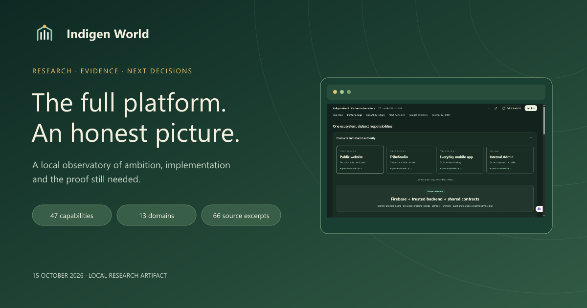
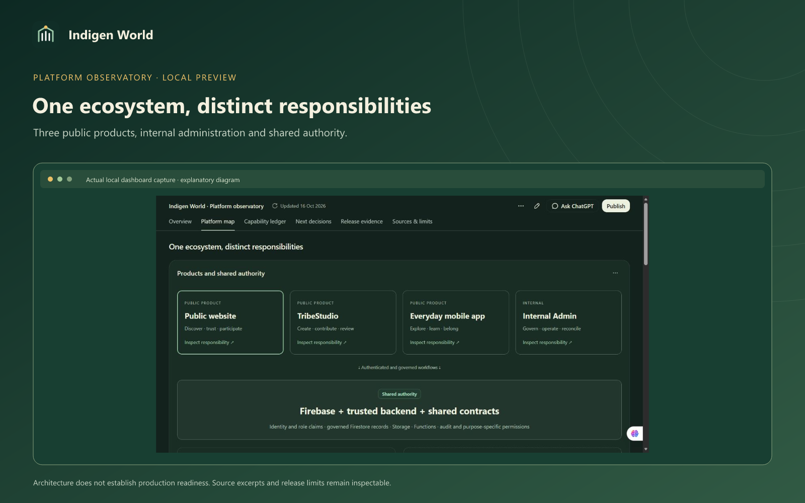

Indigen World is growing into a connected platform for language, learning, cultural media, creators and community. To understand that work more clearly, we have prepared a local platform observatory: an interactive research dashboard that places the ambition beside the evidence and the remaining work.

The dashboard covers the public website, TribeStudio, the everyday mobile app and internal administration, together with shared Firebase services, cultural permissions, contribution and review, rewards, support, research and future language cells. Project Kassena remains the first Kasem programme.

Six views bring together an overview, product and permission diagrams, a searchable capability ledger, proposed next decisions, dated release evidence and exact source excerpts. Each capability separates implemented behavior, test evidence, release limits and its next acceptance proof. A 45-second Remotion briefing explains the operating loop with playback controls, five chapters and a full text transcript.
The review includes 47 curated capabilities across 13 domains and 66 primary-source excerpts. It also retains conflicting documentation, such as old unpublished notes followed by later publication receipts. An unavailable outcome stays unknown; the dashboard does not invent user numbers, revenue, language-quality scores or an overall completion percentage.
The immediate priorities include a safer institutional export path, clearer development environment isolation, complete signed-in production journeys, qualified cultural and research authority, executed remote release checks, current Play and device verification, and finance and support readiness. These are recommendations with acceptance evidence, not promised dates or unassigned staff commitments.
Run the repository’s local observatory server and open the preview on that computer. Start with Overview, inspect a product in Platform map, filter the Capability ledger, then read the source excerpts or proposed acceptance evidence. Release evidence keeps fresh HTTP checks and scoped local verification separate from historical deployment records.
This is a local research artifact prepared on 15 October 2026. It has not been deployed as a public website or added to the production application. A localhost address works only on the computer running the preview. The audit is a bounded review of selected implementation, documentation, tests and receipts; it is not a full security, legal, accessibility or linguistic certification.
No private production corpus, personal records, payment data or private correspondence was collected. The dashboard does not run live queries or automatically refresh. Source changes require review before a new snapshot is accepted. Publishing this article or sharing the research beyond its intended audience remains a separate handoff.